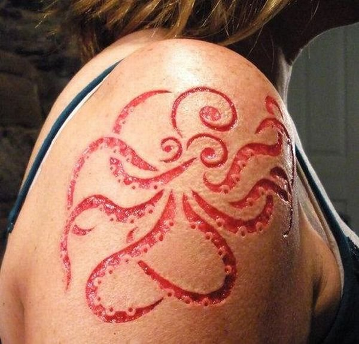

Боді-арт
Представники бодіарту використовували своє тіло як матеріал або об'єкт творчості, вдаючись до різноманітних, часом болючих, маніпуляцій: покривали свої тіла гіпсом, надрізами, виконували виснажливі дихальні вправи, палили на собі волосся. Будучи проявом акционізму, бодіарт зблизився з рядом явищ, що виникли в руслі контр-культури (тату, розфарбовування тіла, тощо).
Сучасний боді арт знаходиться на стику графіки і живопису, декоративно-прикладного мистецтва, дизайну, макіяжу і стилю, перукарського мистецтва.
Насправді бодіарт в цей час був визнаний як окремий вид мистецтва. Зароджувався ж він набагато раніше багатьох інших видів мистецтва.
Практика розпису тіла і до цього дня поширена серед племен, що знаходяться на рівні кам'яного віку. Загалом, майже всі племена в тій або іншій мірі використовують прийоми зміни свого тіла. Але для чого? Одні для залякування своїх супротивників, інші для прикраси і залучення протилежної статі. Треті слідують традиціям або проходять деякі ритуали посвячення.
Але останнім часом всі ці традиції поступово почали просочуватися в наше життя, природно перетворюючись і беручи, так сказати цивілізований вигляд.
 |
 |
 |
Бодіарт класифікується на чотири основні види:
Бодіпентінг малювання по тілу. Найбільш нешкідливий і популярний вид бодіарту . Він легко і швидко наноситься і так само легко змивається. Цей вид бодіарту носить в основному розважальний характер.
Татуаж - другий вид бодіарту. Татуювання наноситься під шкіру і залишається там надовго ( точніше назавжди). В даний час розроблені спеціальні фарби, в наслідок чого татуювання стали кольоровими. Досить модно зараз і татуювання хною. Основна перевага таких татуювань - вони триматися від одного тижня до місяця і сходять по мірі відновлення шкіри.
 |
Пірсинг - означає не що інше як "проколювання дірок", з подальшим носінням в них сережок, кілець, "штанг" та інших прикрас. Дірки роблять у всіляких частинах тіла - від носа і брів, до пупка, дірки, проколоті стерильною голкою, не спричиняють ні запалень, ні заражень. Однак і захоплюватися теж не варто.
Ну і нарешті найекстремальніший вид - скарифікація. Що в перекладі означає - "шрамування". Виробляється хірургічними скальпелями. Різновид шрамування - бредінг. Це випалювання клейма.
|  |
Вгору